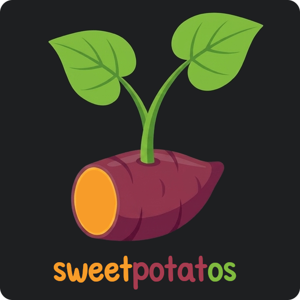
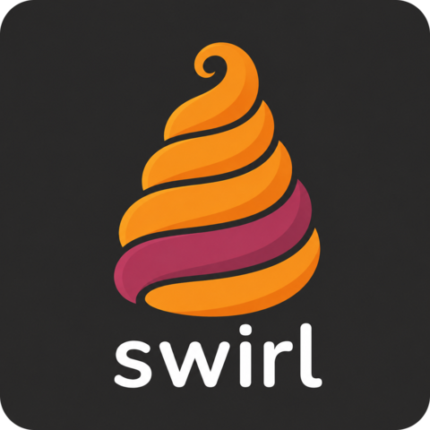
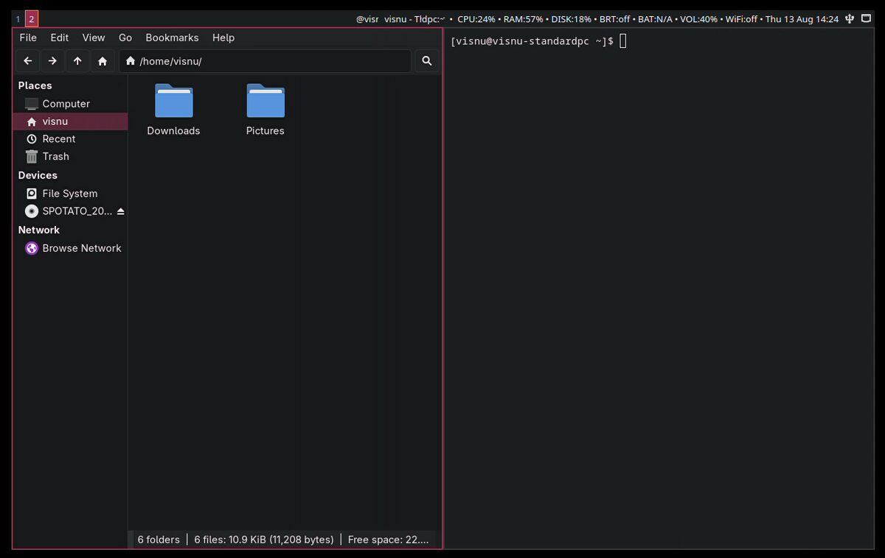
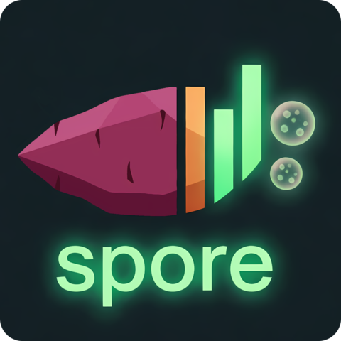
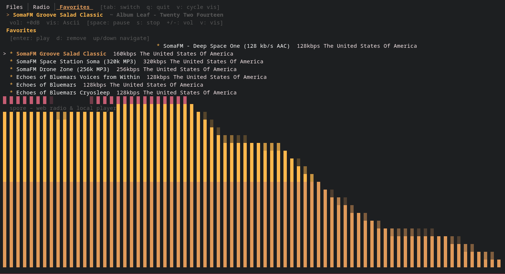
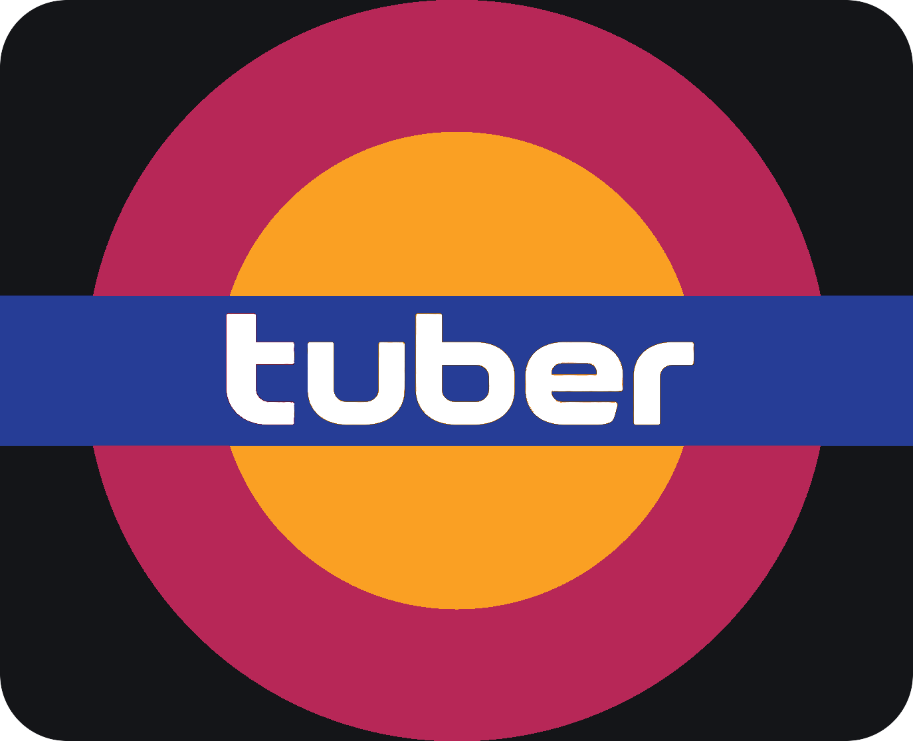
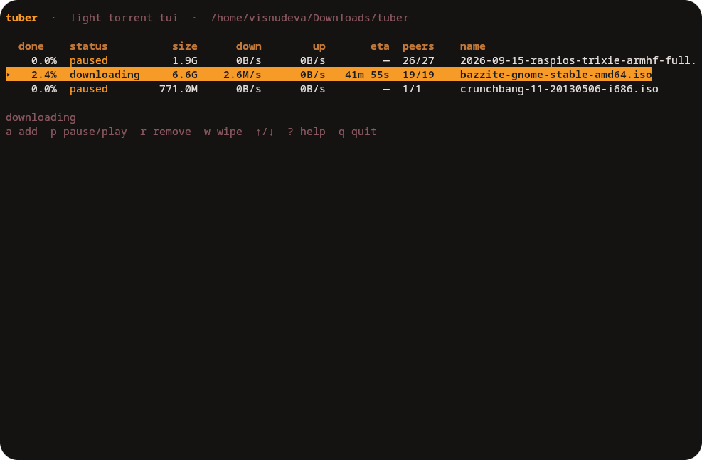
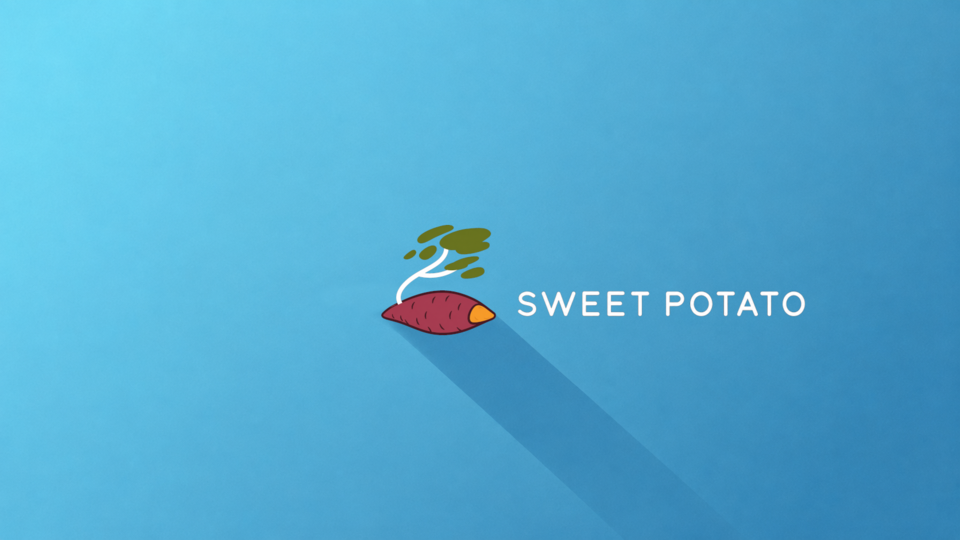
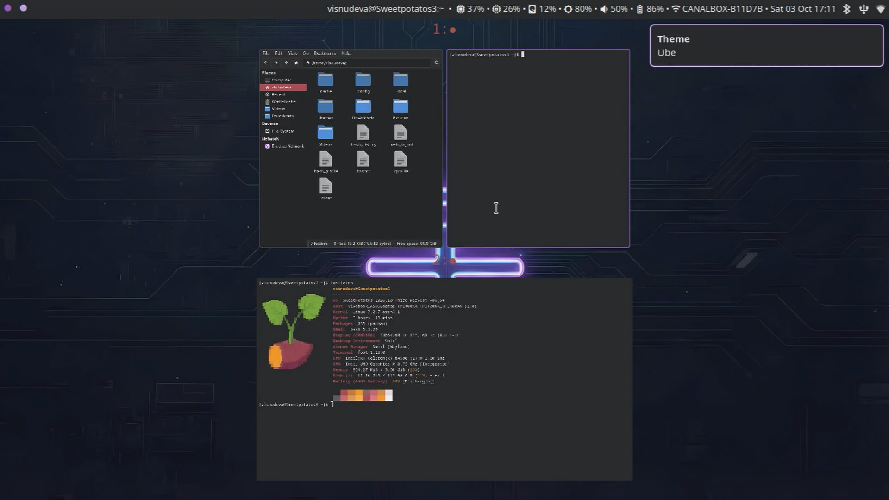

SweetPotatOs
The Arch live ISO, installer, and package channel.
 GitHub
GitHub
The distro, the compositor, the apps that ship with it, and the desktop theme.

The Arch live ISO, installer, and package channel.
GitHub

Scrolling tiling Wayland compositor. Columns sit on a horizontal strip.

Swirl
Terminal web radio and local music, with a visualizer.

Spore
Light terminal BitTorrent client.

Tuber
Desktop theme for Swirl: colors, bar, lock screen, and terminal.

SweetPotato theme